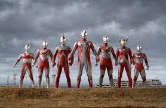

Ultraman adalah karakter pahlawan super asal Jepang yang pertama kali muncul dalam serial televisi pada tahun 1966. Dikenal sebagai pelindung bumi, Ultraman berasal dari luar angkasa dan memiliki kemampuan luar biasa untuk melawan monster raksasa yang mengancam manusia. Dengan tubuh berwarna perak dan merah, serta sinar yang mematikan, Ultraman menjadi simbol keberanian dan harapan. Serial ini telah berkembang menjadi berbagai film, komik, dan permainan, menjadikannya salah satu ikon budaya pop yang paling dicintai di Jepang dan di seluruh dunia.
